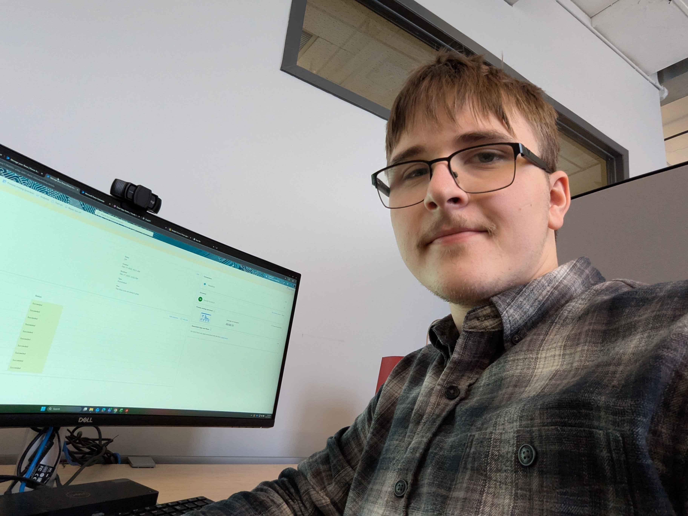
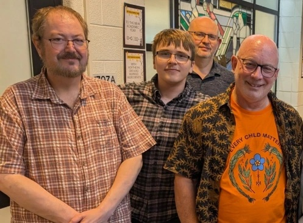

Co-op Work Term Report
Konrad Polkowski Website Training & Support Specialist
Abstract / Introduction
During the Fall 2025 work term, I completed a four-month co-op placement as an OVC Website Training & Support Specialist at the University of Guelph’s Ontario Veterinary College (OVC). In this role, I supported faculty and staff by troubleshooting SharePoint and CampusPress issues, maintaining intranet content, and building Power Automate workflows to support internal processes across the college.
This website documents the skills and experience I gained through that work, with a focus on practical problem-solving, automation, and user support in a large academic environment. The work term pushed me to apply computing concepts outside of coursework and take responsibility for systems used daily by faculty and staff.
Information about the Employer
The Ontario Veterinary College (OVC) is one of Canada’s leading veterinary education and research institutions and is part of the University of Guelph, where I study. OVC supports a large and diverse community of faculty, staff, and students, with a strong focus on teaching, research, and clinical practice.
From a computing perspective, OVC relies heavily on Microsoft 365 tools, particularly SharePoint, to support internal communication, websites, and documentation. The intranet team supports faculty onboarding, maintains content, and helps users resolve technical issues related to these platforms.
Technical and Professional Development
Microsoft 365 Proficiency
At the start of the work term, my goal was to become comfortable using core Microsoft 365 tools such as Excel, Power Automate, Teams, and Forms in a professional setting.
I achieved this by applying these tools in daily tasks, building and maintaining Power Automate flows, and asking for feedback from my supervisors and teammates. By the end of the term, I was able to complete tasks using these tools with minimal guidance and improved efficiency.
Faculty Onboarding Support
Supporting faculty onboarding to the OVC intranet was an important part of my role. I shadowed onboarding sessions, guided faculty through required steps, and documented common issues to reduce repeated questions.
This experience improved my ability to explain technical processes clearly and helped me understand how small usability issues can significantly affect user experience.
SharePoint and CampusPress Troubleshooting
I strengthened my troubleshooting skills by assisting with SharePoint and CampusPress support requests. This involved identifying issues, testing possible fixes, and explaining solutions in non-technical language.
Over time, I became more confident resolving issues independently and communicating clearly with users who had limited technical backgrounds.
Teamwork and Collaboration
Working as part of the intranet support team required clear communication, reliability, and adaptability. I participated in team meetings, shared updates on my work, and supported teammates when needed.
This helped me better understand team workflows and how individual contributions fit into larger projects.
Problem-Solving and Time Management
Balancing multiple support requests and projects required strong organizational skills. I learned to prioritize tasks, track progress, and ask for clarification when needed.
By the end of the term, I was more comfortable managing my workload independently and approaching problems methodically rather than reactively.
Job Description
As an OVC Website Training & Support Specialist Co-op Student, I supported faculty and staff with website-related tools used across the Ontario Veterinary College. This included troubleshooting SharePoint and CampusPress issues, maintaining intranet content, and assisting with faculty onboarding.
A large part of my role involved creating, maintaining, and fixing Power Automate flows. I reviewed failed flows step by step to identify errors and restore functionality. One project involved converting BMP images of shipment slips into searchable HTML files for the accounting team.
Conclusions
This work term gave me hands-on experience supporting real users in a professional environment. I gained confidence troubleshooting live systems, working independently, and communicating clearly with faculty and staff.
Overall, this experience strengthened my technical foundation and gave me a clearer understanding of how computing support functions within a large academic institution.
Acknowledgments
I would like to thank the OVC intranet team for their guidance and support throughout my work term. I am especially grateful to Scott Schau and Scott Moccia for their leadership, mentorship, and trust in my work. Their willingness to involve me in real tasks, provide clear direction, and offer thoughtful feedback helped me build confidence and understand how my work fit into the broader goals of the team. Learning from their experience gave me valuable insight into how effective technical leadership works in a professional environment.
I would also like to thank Martie Torre for being an incredibly kind and supportive teammate. She was always approachable and willing to help, whether I had a technical question or needed clarification on a process. Her patience and encouragement made it easier to ask questions and learn from mistakes, and she played a big role in making the work environment welcoming and collaborative.
Overall, I am thankful for the opportunity to learn from such a supportive team and to contribute to the work being done at the Ontario Veterinary College.
